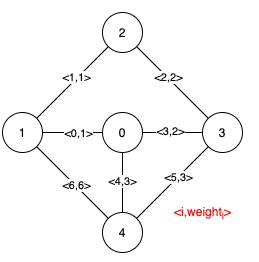
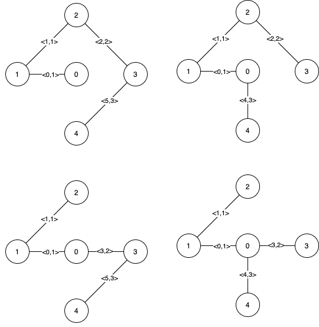
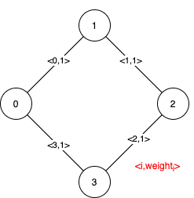

1489. 找到最小生成树里的关键边和伪关键边
先求 MST 总权 base；对每条边 e：强制排除 e 再跑 Kruskal 变贵（或断开）→ 关键边，否则强制选 e 仍能取到 base → 伪关键边。
思路
- 按权排序跑一遍 Kruskal 得到
base（真 MST 权值和），并查集判环。 - 关键边：排除 e 再跑，总权 > base（或根本连不通）——没有它 MST 变贵，说明每棵 MST 都含它。
- 伪关键边：不关键（排除后仍能取到 base）且强制选 e 再跑总权 == base——存在含它的 MST，但不是唯一选择。
- 两次判定各用一次带「排除位/强制位」的 Kruskal，总共 O(E) 次，E ≤ 200 完全够快。
图解
最优解
1import java.util.*;2 3class Solution {4 private int[] pa;5 6 public List<List<Integer>> findCriticalAndPseudoCriticalEdges(int n, int[][] edges) {7 int m = edges.length;8 Integer[] idx = new Integer[m]; // 按权值排序后的边下标9 for (int i = 0; i < m; i++) idx[i] = i;10 Arrays.sort(idx, (a, b) -> edges[a][2] - edges[b][2]);11 12 int base = run(n, edges, idx, -1, -1); // 真 MST 的权值和13 List<Integer> critical = new ArrayList<>(), pseudo = new ArrayList<>();14 for (int i = 0; i < m; i++) {15 if (run(n, edges, idx, i, -1) > base) critical.add(i); // 不含 i 会变贵或断开 → 关键边16 else if (run(n, edges, idx, -1, i) == base) pseudo.add(i); // 强制含 i 仍最优 → 伪关键边17 }18 return Arrays.asList(critical, pseudo);19 }20 21 /** 跑一遍 Kruskal：跳过 exclude，强制先选 include；选不满 n-1 条说明不连通，返回极大值。 */22 private int run(int n, int[][] edges, Integer[] idx, int exclude, int include) {23 pa = new int[n];24 for (int i = 0; i < n; i++) pa[i] = i;25 int total = 0, picked = 0;26 if (include >= 0) {27 total += edges[include][2];28 picked++;29 union(edges[include][0], edges[include][1]);30 }31 for (int i : idx) {32 if (i == exclude || i == include) continue;33 if (find(edges[i][0]) != find(edges[i][1])) {34 union(edges[i][0], edges[i][1]);35 total += edges[i][2];36 if (++picked == n - 1) break;37 }38 }39 return picked == n - 1 ? total : Integer.MAX_VALUE;40 }41 42 private void union(int a, int b) {43 pa[find(a)] = find(b);44 }45 46 private int find(int x) {47 while (pa[x] != x) {48 pa[x] = pa[pa[x]]; // 路径减半49 x = pa[x];50 }51 return x;52 }53}题目
给你一个 n 个点的带权无向连通图，节点编号为 0 到 n-1 ，同时还有一个数组 edges ，其中 edges[i] = [fromi, toi, weighti] 表示在 fromi 和 toi 节点之间有一条带权无向边。最小生成树 (MST) 是给定图中边的一个子集，它连接了所有节点且没有环，而且这些边的权值和最小。
请你找到给定图中最小生成树的所有关键边和伪关键边。如果从图中删去某条边，会导致最小生成树的权值和增加，那么我们就说它是一条关键边。伪关键边则是可能会出现在某些最小生成树中但不会出现在所有最小生成树中的边。
请注意，你可以分别以任意顺序返回关键边的下标和伪关键边的下标。
示例 1：

输入：n = 5, edges = [[0,1,1],[1,2,1],[2,3,2],[0,3,2],[0,4,3],[3,4,3],[1,4,6]] 输出：[[0,1],[2,3,4,5]] 解释：上图描述了给定图。 下图是所有的最小生成树。
注意到第 0 条边和第 1 条边出现在了所有最小生成树中，所以它们是关键边，我们将这两个下标作为输出的第一个列表。 边 2，3，4 和 5 是所有 MST 的剩余边，所以它们是伪关键边。我们将它们作为输出的第二个列表。
示例 2 ：

输入：n = 4, edges = [[0,1,1],[1,2,1],[2,3,1],[0,3,1]] 输出：[[],[0,1,2,3]] 解释：可以观察到 4 条边都有相同的权值，任选它们中的 3 条可以形成一棵 MST 。所以 4 条边都是伪关键边。
提示：
2 <= n <= 1001 <= edges.length <= min(200, n * (n - 1) / 2)edges[i].length == 30 <= fromi < toi < n1 <= weighti <= 1000- 所有
(fromi, toi)数对都是互不相同的。
题面取自力扣当前版本。
数据快照 2026-11-04。题面版权归力扣所有，本站点仅供本人学习使用，请勿对外发布。